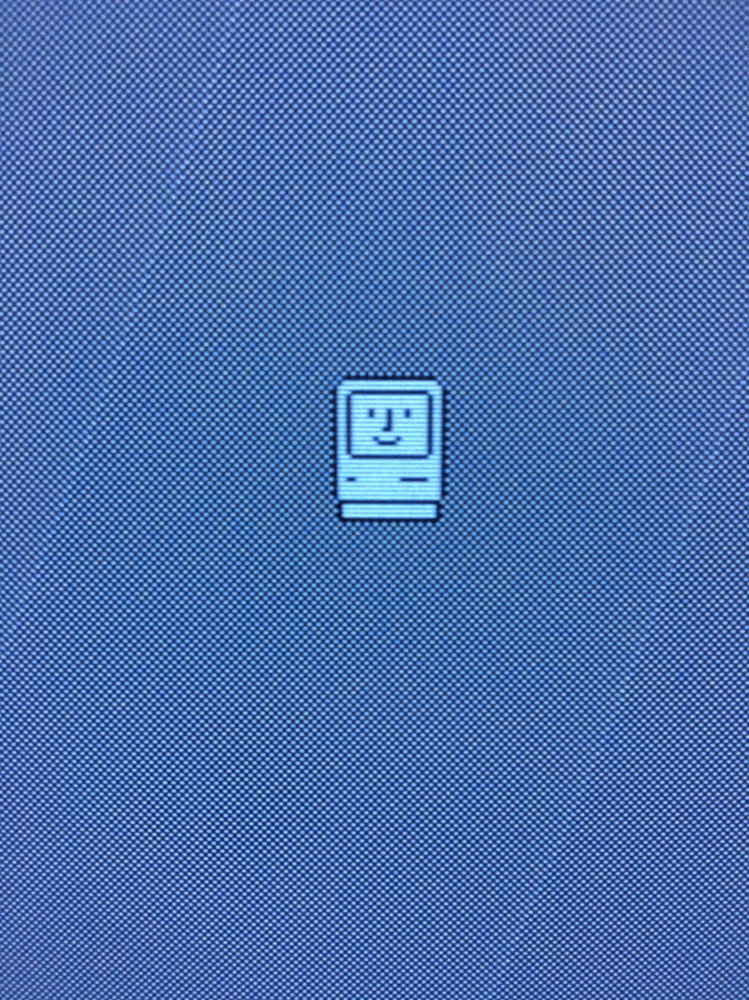
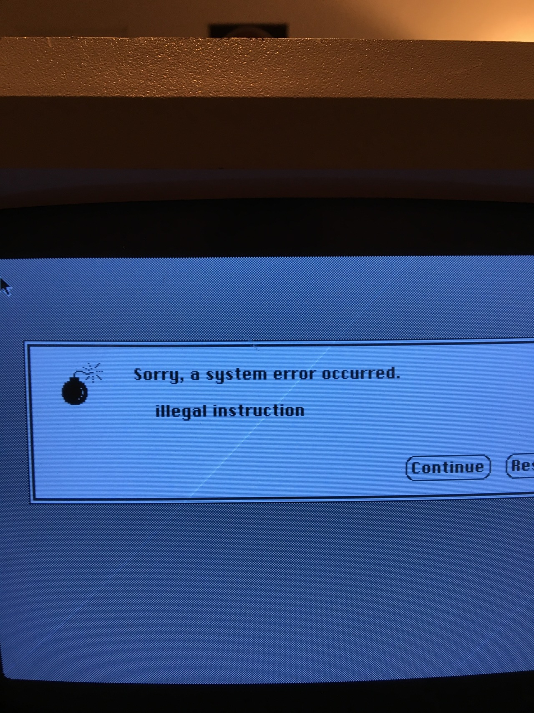
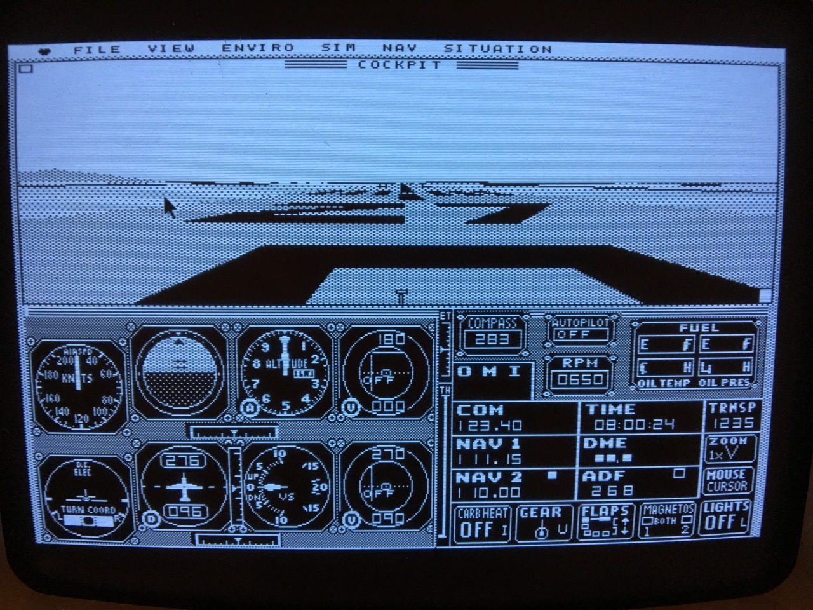

Macintosh Plus
I was able to get the Macintosh Plus to boot okay
 It still isnt perfect, and fails sometimes when I turn it on
 BUT! It mostly works - Now I just have to learn how to boot more programs when I want to
Also, I was playing around in the control panel. Its actually really well designed, I was surprised.
There’s a lot of usability there. Also, Flight Simulator Works.
